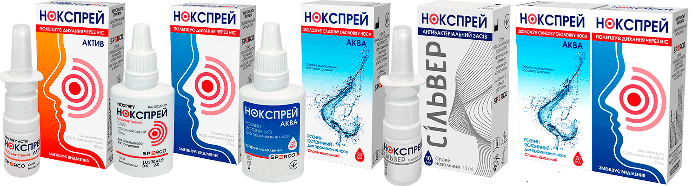

Нокспрей
Лінійка засобів для лікувуання1нежиттю від SPERCO



НОКСПРЕЙ
ПРИ НЕЖИТЮ ДОПОМАГАЄ – ШВИДКО2 НІС ПРОБИВАЄ4!
Спрей для полегшення закладеності носа у дітей від 6 років та
дорослих. Діючою речовиною препарату Нокспрей є оксиметазолін,
який:
-
 зменшує набряк слизової оболонки носа*
зменшує набряк слизової оболонки носа*
-
 відновлює носове дихання*
відновлює носове дихання*
- зменшує виділення з носа*
Активні компоненти ефірних олій, що входять до складу
препарату Нокспрей, сприяють усуненню відчуття подразнення
слизової оболонки носа та захищають її від надмірного
висихання. Тривалість дії препарату Нокспрей становить 10-12
годин.*
*Інструкція для медичного застосування лікарського засобу Нокспрей.


НОКСПРЕЙ
ПРИ НЕЖИТЮ ДОПОМАГАЄ – ШВИДКО2 НІС ПРОБИВАЄ4!
Спрей для полегшення закладеності носа у дітей від 6 років та
дорослих. Діючою речовиною препарату Нокспрей є оксиметазолін,
який:
-
зменшує набряк слизової оболонки носа*
-
відновлює носове дихання*
- зменшує виділення з носа*
Активні компоненти ефірних олій, що входять до складу
препарату Нокспрей, сприяють усуненню відчуття подразнення
слизової оболонки носа та захищають її від надмірного
висихання. Тривалість дії препарату Нокспрей становить 10-12
годин.*
*Інструкція для медичного застосування лікарського засобу Нокспрей.
НОКСПРЕЙ АКВА
ДЛЯ ЗВОЛОЖЕННЯ ТА ПРОМИВАННЯ НОСА
Нокспрей Аква – це медичний виріб у вигляді назального спрею,
що містить в складі ізотонічний сольовий розчин для промивання
носа. Використання Нокспрею Аква в комплексному лікуванні
захворювань слизової оболонки носа і придаткових пазух
(риносинусити) сприяє:
- зволоженню слизової оболонки носа*
-
 відновленню носового дихання*
відновленню носового дихання*
-
 скороченню періоду реабілітації*
скороченню періоду реабілітації*
Активні компоненти ефірних олій, що входять до складу
препарату Нокспрей, сприяють усуненню відчуття подразнення
слизової оболонки носа та захищають її від надмірного
висихання. Тривалість дії препарату Нокспрей становить 10-12
годин.*
*Інструкція для медичного застосування лікарського засобу Нокспрей.


АКЦІЙНИЙ НАБІР НОКСПРЕЙ
КУПУЮЧИ НАБІР, ОТРИМУЙ НОКСПРЕЙ АКВА У ПОДАРУНОК3!2!
Кажуть, щоб лікувати нежить1 потрібні два засоби: перший
промиває, а другий пробиває4...
Саме тому було створено набір Нокспрей! Нокспрей - від нежитю, а Нокспрей Аква для промивання іде у подарунок3!
Саме тому було створено набір Нокспрей! Нокспрей - від нежитю, а Нокспрей Аква для промивання іде у подарунок3!
-
Нокспрей Аква ніс промиває!
-
Нокспрей ніс пробиває4!
Купуючи набір, отримуй Нокспрей Аква у подарунок3!
*Інструкція для медичного застосування лікарського засобу Нокспрей.
НОКСПРЕЙ СІЛЬВЕР
НОКСПРЕЙ СІЛЬВЕР – СИЛА СРІБЛА, НІЖНІСТЬ ДЕКСПАНТЕНОЛУ!
Нокспрей Сільвер - це частина комплексного лікування5
риносинуситу у вигляді медичного виробу для дітей віком від 1
року* і дорослих. Назальний спрей Нокспрей Сільвер має
антимікробну дію, а також сприяє регенерації слизової оболонки
носа* завдяки іонам срібла та декспантенолу в складі.
-
 Антибактеріальний, противірусний та протигрибковий
ефекти*
Антибактеріальний, противірусний та протигрибковий
ефекти*
- Декспантенол сприяє регенерації пошкодженої слизової оболонки носа
*Інструкція для застосування медичного виробу Нокспрей Сільвер. 5. В якості антисептичного засобу

1Під фразами «лікування нежитю» та «лікувати нежить» мається на
увазі симптоматичне лікування гострих респіраторних захворювань
(ГРЗ), що супроводжуються закладеністю носа, алергічного риніту чи
вазомоторного риніту. 2Згідно з інструкцією для медичного
застосування дія препарату Нокспрей починається через 5-10 хвилин
після упорскування в порожнину носа. 3Мається на увазі, що вартість
«Нокспрей, назальний спрей 0,05% - 10 мл» дорівнює вартості
«Акційний комплект: Нокспрей, назальний спрей 0,05% - 10 мл +
Нокспрей Аква, розчин ізотонічний - 20 мл» під час продажу від
виробника дистриб'юторам. Акція дійсна на всій території України
(окрім АР Крим та тимчасово окупованих територій Донецької та
Луганської областей) у період з 01.01.2020 року і до закінчення
акційного товару на складі виробника. Детальні умови акції можна
дізнатися на сайті sperco.ua. Інформація не є публічною офертою.
4Під «пробиває» мається на увазі зменшення набряку слизової оболонки
носа та відновлення носового дихання. 5В якості антисептичного
засобу.